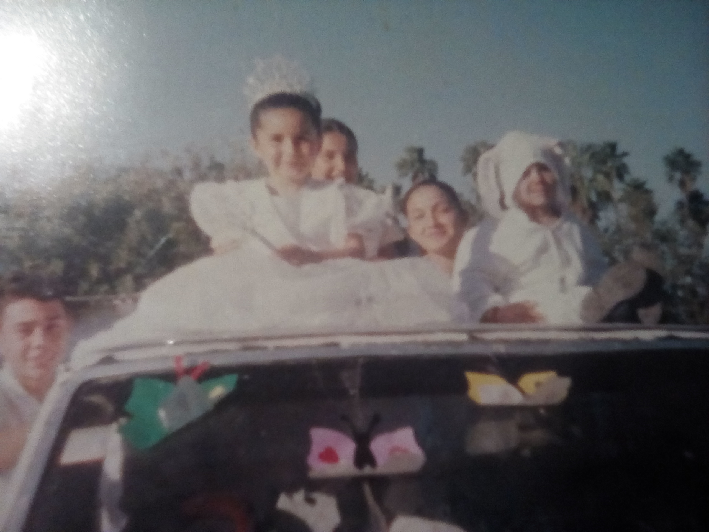
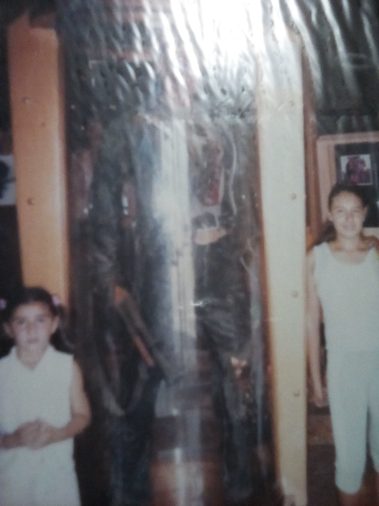
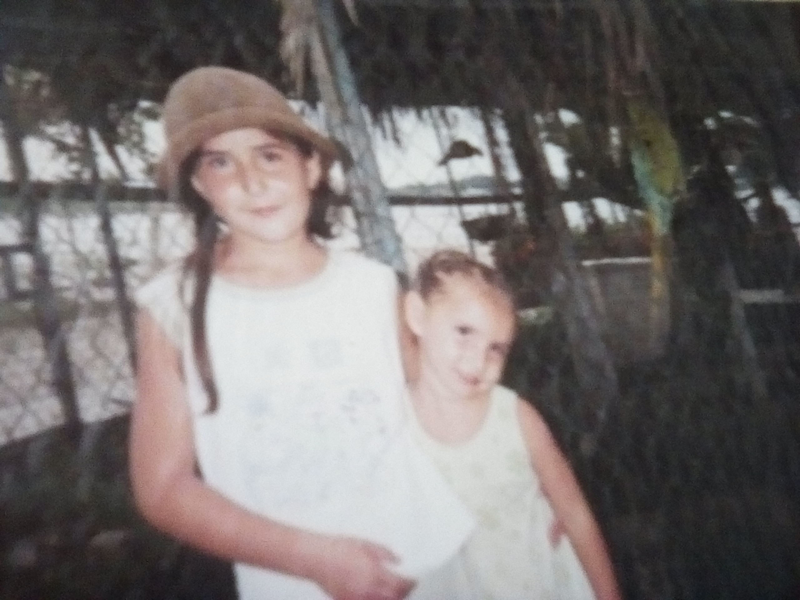

FLORA CAROLINA MORENO CAMACHO

PRINCESA
Cuando yo iba en el kínder una de las maestras me eligió para ser la reina de la primavera y mi mama accedió, me vistieron con un vestido blanco
y me pasearon por todo el recorrido de un desfile de mi comunidad .

VIAJES
Me considero una persona muy afortunada que ha viajado tanto de forma personal, familiar y disciplinaria (concursos), el viaje a puerto Vallarta
es uno de los más interesantes porque ese fue familiar y visitamos muchos lugares, dentro de ellos está el museo de cera que tenía un terminator
que me daba mucho miedo y mi madre insistió en que nos tomáramos una foto mi hermana y yo a un lado de la figura, fue algo escalofriante en ese tiempo,
ahora lo recuerdo y me da risa.